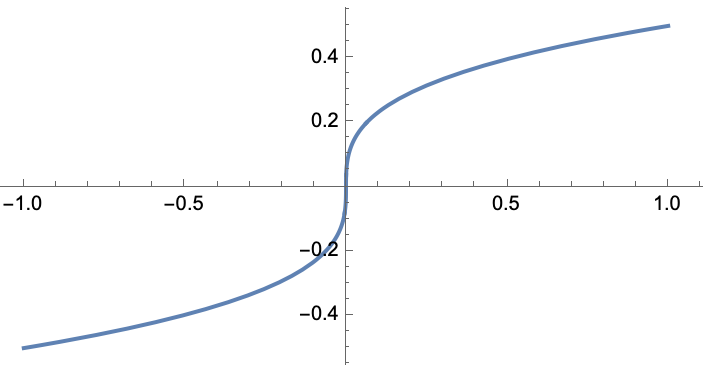
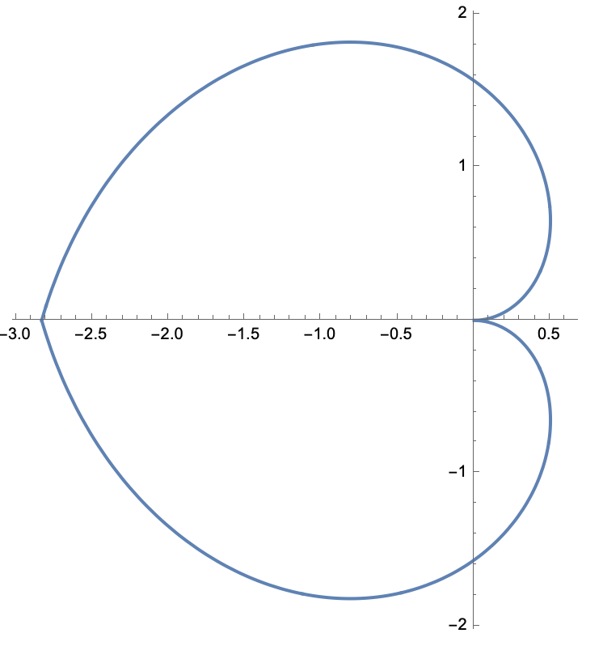
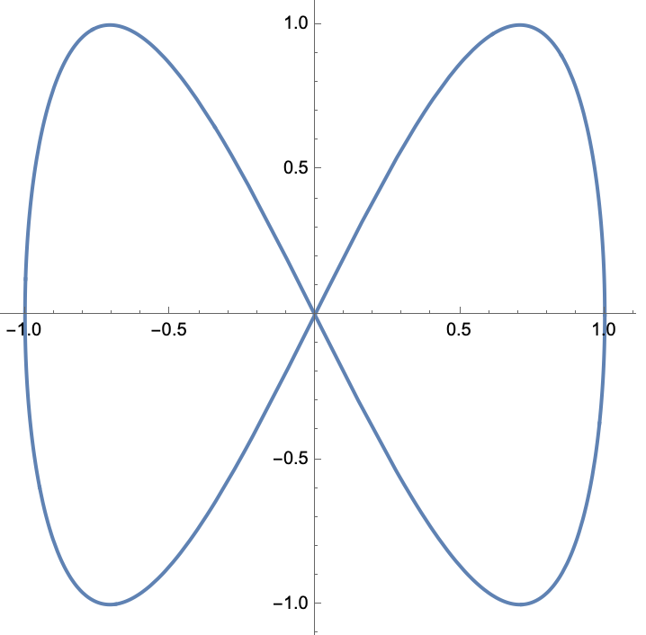
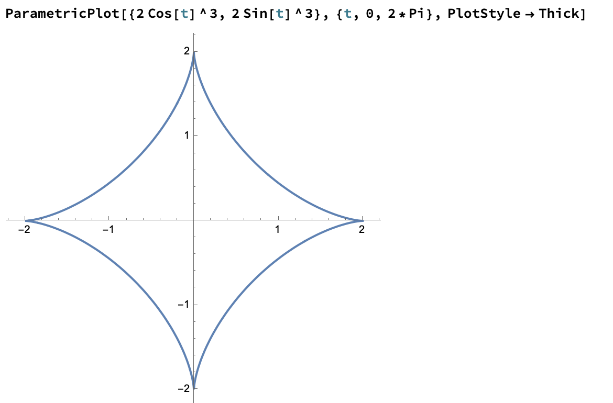
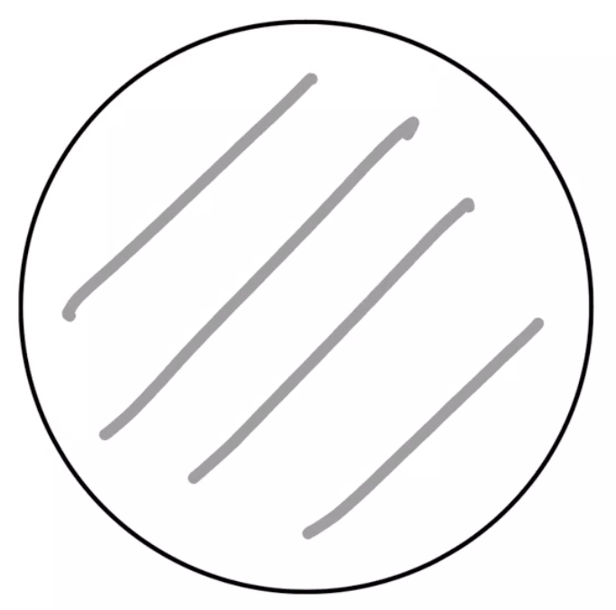
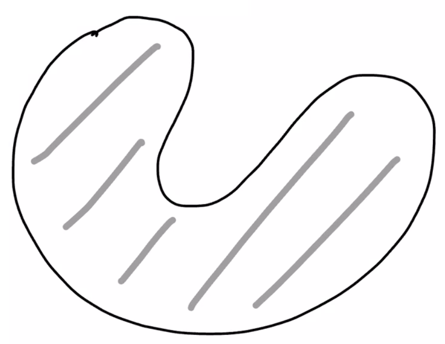
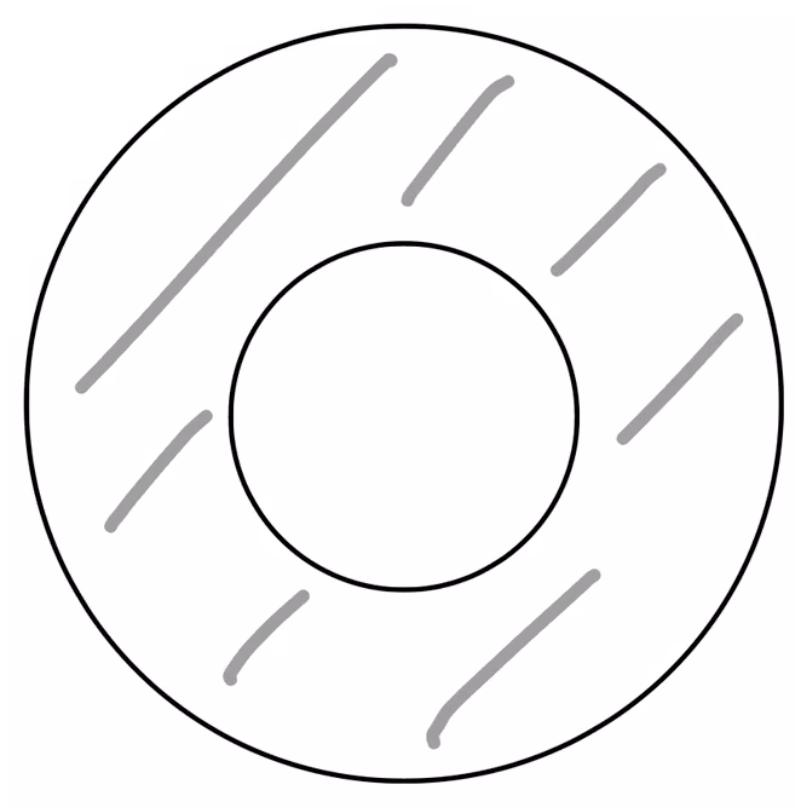
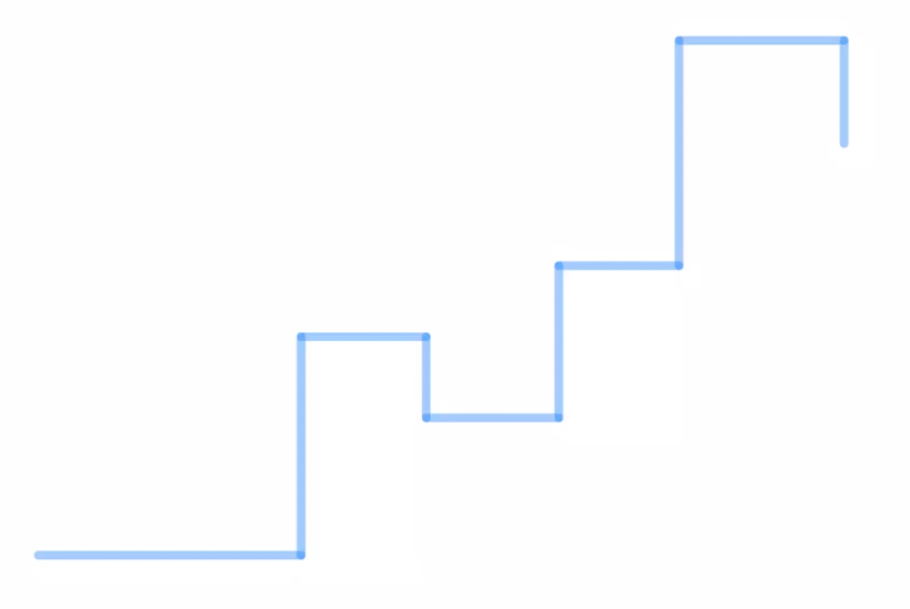

Una curva suave a trozos \(\alpha:[a,b]\to \mathbb{R}\) se llama:
cerrada si \(\alpha(a)=\alpha(b)\),
simple si para todos \( s,t \in (a,b] \), \(\alpha(s)\ne \alpha(t)\).
Ejemplos.
Simple, no cerrada.

No simple, no cerrada.
Simple, cerrada.

No simple, cerrada.

Una curva suave a trozos, cerrada, simple se conoce como una curva de Jordan.
Definición
Dado un subconjunto \(A \subseteq \mathbb{R}^n\) decimos que un punto \(p\in \mathbb{R}^n\)
es un punto frontera de \(A\) si para todo \(r> 0\)
\[
B_r(p)\cap A \ne \emptyset \quad \textrm{y} \quad B_r(p)\cap A^c \ne \emptyset,
\]
es decir, toda bola abierta centrada en \(p\) contiene puntos en \(A\) y en el complemento de \(A\).
Al conjunto de puntos frontera de \(A\) lo denotaremos como \(\partial A\).
La frontera de un conjunto siempre es un subconjunto cerrado.
Sea \(A \subseteq \mathbb{R}^n\). Para probar que \(\partial A\) es cerrado
vamos a probar que su complemento es abierto.
Antes de iniciar vemos que si negamos la definición de punto frontera
tenemos que \(p\notin \partial A\) si y sólo si exsite un \(r_0> 0\)
tal que alguna de las siguientes pasa:
\[
B_{r_0}(p)\cap A =\emptyset \quad \textrm{ó} \quad B_{r_0}(p)\cap A^c = \emptyset.
\]
que a su vez implica
\[
B_{r_0}(p) \subseteq A^c \quad \textrm{ó} \quad B_{r_0}(p)\subseteq A.
\]
En resumen:
\begin{equation}\label{Eqn:CharactComplementoFrontera}
p\in (\partial A)^c \Leftrightarrow \textrm{ existe \(r_0 >0\) tal que
\(B_{r_0}(p)\subseteq A^c\) ó \(B_{r_0}(p)\subseteq A\)}
\end{equation}
Ahora sea \(p\in (\partial A)^c\) fijo y arbitrario. Tenemos dos casos.
Caso 1: existe \(r>0\) con \(B_{r}(p)\subseteq A^c\). Afirmamos que \(B_{r}(p)\subseteq (\partial A)^c\).
En efecto, si \(q\in B_{r}(p)\) existe un
\(r_0>0\) tal que \(B_{r_0}(q) \subseteq B_{r}(p)\) de lo cual se sigue que
\(B_{r_0}(q)\subseteq A^c\) y por \eqref{Eqn:CharactComplementoFrontera} \(q \in (\partial A)^c\).
Por lo tanto \(B_{r}(p)\subseteq (\partial A)^c\).
Caso 2: existe \(r>0\) con \(B_{r}(p)\subseteq A\). Afirmamos que \(B_{r}(p)\subseteq (\partial A)^c\).
En efecto, si \(q\in B_{r}(p)\) existe un
\(r_0>0\) tal que \(B_{r_0}(q) \subseteq B_{r}(p)\) de lo cual se sigue que
\(B_{r_0}(q)\subseteq A\) y por \eqref{Eqn:CharactComplementoFrontera} \(q \in (\partial A)^c\).
Por lo tanto \(B_{r}(p)\subseteq (\partial A)^c\).
Teorema
Toda curva de Jordan descompone a el plano en dos regiones abiertas conexas
una acotada y una no acotada teniendo a la curva como la frontera de cada una
de las regiones.
La región acotada se conoce como el interior de la curva y la no acotada
el exterior de la curva.

Nota: a pesar de que el resultado es intuitivo la prueba del teorema
no es sencilla y no se verá.
Sea \(U\subseteq \mathbb{R}^2\) un abierto y
\(\mathcal{S}\subset U\) un subconjunto compacto con interior no vacío
tal que \(\partial \mathcal{S} \subset U\) es una:
curva suave a trozos,
cerrada,
simple.
Supongamos que \(P,Q:U \to \mathbb{R}\) son funciones clase \(C^1\)
en \(U\). Si \(\partial S\) está orientada en contra de las manecillas del reloj
entonces
Este ejercicio muestra el uso del Teorema de Green para calcular integrales de línea.
Calcula la integral de línea
\[
\int_{\gamma} (a_1+b_1xy+c_1y^2)dx+(a_2+b_2xy+c_2x^2)dy
\]
donde \(\gamma\) es el cuadrado con vértices \((0,0),(1,0), (0,1), (1,1)\) recorrido
en el sentido positivo.
Ejercicio
Calcula las siguientes integrales mediante dos métodos:
de manera directa y usando el Teorema de Green.
\(\int_{\gamma}(Ax+By)dx+ (Cx+Dy)dy \),
donde \(\gamma\) es el círculo centrado en el
origen de radio \(r>0\), recorrido
positivamente y \(A,B,C,D\in \mathbb{R}\) son
constantes.
\(\int_{\gamma} (x^3y)dx + (xy^2)dy \), donde \(\gamma\)
es el rectángulo con vértices \((0,0), (3,0), (3,1), (0,1)\),
recorrido en el sentido positivo.
Resolviendo de manera directa la integral de línea,
debemos primero parametrizar el círculo con centro en
el orígen y de radio \(r >0\).
Sea \(\gamma : [0, 2\pi] \subseteq \mathbb{R}
\rightarrow \mathbb{R}^{2}\) definida como
\(\gamma(t) = (r\cos(t), r\sen(t))\),
es claro que \(\gamma\) recorre de manera
positiva al círculo y
\(\gamma^{\prime}(t) = (-r\sen(t), r\cos(t))\).
Por lo tanto,
\(\int_\gamma (Ax + By)dx + (Cx + Dy)dy = \pi r^{2}[C - B]\).
Por otro lado, usando el Teorema de Green tenemos que
\[
\int_\gamma (Ax + By)dx + (Cx + Dy)dy
=
\int_D[\partial_x(Cx + Dy) - \partial_y(Ax + By)]dA
\]
donde \(D\) es la región encerrada por la curva
\(\gamma\), es decir
\(D = \lbrace (x, y) \in \mathbb{R}^{2} :
x^{2} + y^{2} \leq r \rbrace\).
Además \(\partial_x(Cx + Dy) = C\) y
\(\partial_y(Ax + By) = B\).
Por lo tanto,
\begin{eqnarray*}
\int_\gamma (Ax + By)dx + (Cx + Dy)dy
& = & \int_D[C - B] dA \\
& = & [C - B]\int_D 1 dA \\
& = & [C - B]\text{Area}(D) \\
&=& \pi r^{2}[C - B]
\end{eqnarray*}
ya que \(\int_D 1 dA = \text{Area}(D) = \pi r^{2}\).
Nota: Si queremos comprobar que
\(\int_D 1 dA = \pi r^{2}\), entonces a la
región \(D\) la podemos representar como una
región de Tipo I, es decir
\( D = \lbrace(x, y)\in \mathbb{R}^{2} :
x\in[-r, r],
-\sqrt{r^{2} - x^{2}} \leq y \leq \sqrt{r^{2} - x^{2}}
\rbrace\).
Por lo tanto
\[
\int_D 1 dA =
\int_{-r}^r\left(\int_{-\sqrt{r^{2} - x^{2}}}^{\sqrt{r^{2}
- x^{2}}}1 dy\right)dx = \int_{-r}^r 2\sqrt{r^{2} - x^{2}}dx
= 2\int_{-r}^r \sqrt{r^{2} - x^{2}} dx
\]
Como \(\sqrt{r^{2} - x^{2}}\) es una función par
tenemos que
\(\int_{-r}^r \sqrt{r^{2} - x^{2}} dx
= 2\int_0^{r}\sqrt{r^{2} - x^{2}} dx\)
y tomando el cambio de variable \(x = r\sen(t)\)
( \(dx = r\cos(t)dt\)),
tenemos
\[
\int_D 1 dA = 4\int_0^{\frac{\pi}{2}}r^2\cos^{2}(t)dt
= 4r^2\int_0^{\frac{\pi}{2}}
\left(\frac{1 + \cos(2t)}{2}\right)dt =
\pi r^{2} .
\]
Por lo tanto, \(\int_D 1 dA = \pi r^{2}\).
Ejercicio
Usa el Teorema de Green para calcular para calcular
\(\int_{\gamma} e^{y^2}dx+xdy\), cuando \(\gamma\) es:
El cuadrado con vértices \((0,0), (2,0), (2,2), (0,2)\),
recorrido positivamente.
El cuadrado con vértices \((-2,-2), (2,-2), (2,2), (-2,2)\),
recorrido positivamente.
El círculo de radio \(r>0\) con centro en el origen, orientado
positivamente.
Ejercicio
Sea \(\gamma \subset \mathbb{R}^2\) una curva cerrada orientada positivamente,
simple, suave a trozos. Sea \(\mathcal{S}\) la región encerrada por
\(\gamma\). Prueba que
\[
\textrm{Area}(\mathcal{S})=\frac{1}{2}\int_{\gamma} xdy-ydx
\]
Por \(\gamma\) denotamos el segmento de recta que une
\((x_1,y_1)\) con \((x_2,y_2)\). Prueba directamente que
\[
\int_{\gamma}xdy-ydx=x_1y_2-x_2y_1
\]
Sea \(\mathcal{P}\) un polígono de tal forma que
\(\partial(\mathcal{P})\) sea una curva suave a trozos, cerrada simple.
Si los vértices de \(\mathcal{P}\), recorridos en el
sentido positivo, son \((x_1,y_1),\dots, (x_n,y_n)\),
prueba que su área es
\begin{eqnarray*}
\textrm{Area}(\mathcal{P})=\frac{1}{2}\left( (x_1y_2-x_2y_1)+(x_2y_3-x_3y_2)+\\
\cdots +(x_ny_1-x_1y_n) \right)
\end{eqnarray*}
Sugerencia: usa el ejercico anterior.
Ejercicio
Sea \(U\subset \mathbb{R}^2\) un abierto y \(f,g:U \to \mathbb{R}\)
dos funciones clase \(C^1\) en \(U\). Sea \(\gamma\) una curva
orientada cerrada, simple, suave a trozos. Prueba que
\[
\int_{\gamma} (f\nabla g) \cdot d\gamma = - \int_{\gamma} (g \nabla f )\cdot d\gamma
\]
Nota que \(f\nabla g\) y \(g \nabla f\) son campos vectoriales.
Definición
Sea \(\gamma:[a,b]\to \mathbb{R}^2\) una curva cerrada simple, suave
a trozos, con la propiedad de que
\(\gamma'(t)\ne 0\), siempre que la derivada \(\gamma'(t)\) existe.
Se define el vector normal unitario a la curva \(\gamma\) como
la función \(\mathbb{n}\) dada por
\[
\mathbb{n}(t)=\frac{1}{\|\gamma'(t)\|}(\gamma_2'(t), -\gamma_1'(t))
\]
Nota: \(\gamma(t)=(\gamma_1(t), \gamma_2(t))\).
Sea \(U\subset \mathbb{R}^2\) un conjunto abierto y
\(\varphi:U \to \mathbb{R}\) una función clase \(C^1\). Definimos
la derivada normal de \(\varphi\) a lo largo de \(\gamma\) como
\[
\partial_{\mathbb{n}}\varphi(t)= \nabla\varphi(\gamma(t))\cdot \mathbb{n}(t)
\]
Ejercicio
Sea \(\gamma:[a,b]\to \mathbb{R}^2\) una curva cerrada simple, suave
a trozos, con la propiedad de que
\(\gamma'(t)\ne 0\), siempre que la derivada \(\gamma'(t)\) existe.
Prueba que \(\gamma' \cdot \mathbb{n} =0\). Es decir, el vector
normal es perpendicular al vector velocidad.
Sea \(U\subset \mathbb{R}^2\) un conjunto abierto
con la traza de \(\gamma \) contenida en \( U\). Considera el campo vectorial, clase \(C^1\)
\(\mathbb{F}:U \to \mathbb{R}^2\), \(\mathbb{F}=(A,B)\). Denota
\(\mathbb{F}^\perp=(B,-A)\). Prueba
\[
\int_{\gamma} \mathbb{F}\cdot d\gamma = \int_{\gamma} (\mathbb{F}^\perp \cdot \mathbb{n}) |d\gamma|
\]
Nota que el lado izquierdo es una integral de línea y el lado derecho una integral
con respecto a longitud de arco.
Ejercicio
Sea \(U\subset \mathbb{R}^2\) un abierto y \(f,g:U\to \mathbb{R}\)
funciones de clase \(C^2\). Sea \(\gamma:[a,b] \to U\) una
curva suave a trozos, cerrada simple.
Por \(\mathcal{S}\) denotamos a la región formada
por la traza de \(\gamma\) y la región que enciarra
(nota que entonces \(\mathcal{S}\) es un compacto). Prueba las siguientes identidades
que relacionan integrales de línea e integrales de Riemann.
Recuerda que \(\nabla^2 g= \partial_x^2g + \partial_y^2 g\).
\(\int_{\gamma} \partial_{\mathbb{n}}g |d\gamma| = \int_{\mathcal{S}} \nabla^2 g dx\otimes dy \)
\(\int_{\gamma} f \partial_{\mathbb{n}}g |d\gamma|
= \int_{\mathcal{S}} (f \nabla^2 g + (\nabla f)\cdot (\nabla g))dx\otimes dy\)
La identidad de Green:
\[
\int_{\gamma} (f \partial_{\mathbb{n}}g - g \partial_{\mathbb{n}}f)|d\gamma|
= \int_{\mathcal{S}} (f \nabla^2 g - g \nabla^2 f)dx\otimes dy
\]
Si \(f\) y \(g\) son armónicas, es decir \(\nabla^2f=\nabla^2g=0\),
prueba
\[
\int_{\gamma} f \partial_{\mathbb{n}}g |d\gamma|= \int_{\gamma} g \partial_{\mathbb{n}}f|d\gamma|
\]
Sea \(\mathbb{F} = (-\partial_yg, \partial_xg)\),
esto implica que \(\mathbb{F}^{\bot} = \nabla g\).
Entonces por el Ejercicio 14.15-2,
tenemos que
\[
\int_\gamma\mathbb{F}\cdot d\gamma
=
\int_\gamma\left(\mathbb{F}^{\bot}\cdot\mathbb{n}\right)|d\gamma|
=
\int_\gamma\left(\nabla g\cdot\mathbb{n}\right)|d\gamma|
=
\int_\gamma\partial_{\mathbb{n}}g |d\gamma| .
\]
Por otro lado, por el Teorema de Green tenemos
\[
\int_\gamma\mathbb{F}\cdot d\gamma
=
\int_S\left[\partial_x(\partial_xg) -
\partial_y(-\partial_yg)\right]dx\otimes dy
= \int_S\left(\partial_x^{2}g
+ \partial_y^{2}g\right)dx\otimes dy
= \int_S \nabla^{2}g dx\otimes dy .
\]
Por lo tanto,
\[
\int_\gamma\partial_{\mathbb{n}}g |d\gamma|
= \int_S \nabla^{2}g dx\otimes dy .
\]
Ejercicio
Sea \(U\subseteq \mathbb{R}^2\) un abierto y \(u,v:U\to \mathbb{R}\)
funciones de clase \(C^2\). Sea \(S\subset U\) un compacto con interior no vacío
tal que \(\partial S\) es una curva de Jordan. Supón que \(\partial S\) está
orientada positivamente. Prueba
Sean \(\gamma_0, \gamma_1, \dots, \gamma_n\)
curvas cerradas simples, suaves a trozos, orientadas
positivamente, con las
siguientes propiedades
Cualesquiera dos curvas
no se intersectan,
Las curvas, \(\gamma_1,\dots, \gamma_n\),
caen dentro del interior de \(\gamma_0\),
La curva \(\gamma_i\) está en el exterior
de la curva \(\gamma_j\), para todos \(1\leq i, j \leq n\),
\(i\ne j\).
Por \(\mathcal{S}\) denotamos la región del plano
que consiste de la unión de \(\gamma_0\), con el
subconjunto del interior de \(\gamma_0\) formado por
los puntos que no están en el interior de las curvas
\(\gamma_1,\dots, \gamma_n\).
Sean \(A,B :U \to \mathbb{R}\), funciones de clase
\(C^1\) en \(U\), donde \(U\subset \mathbb{R}^2\)
es un conjunto abierto que contiene a \(\mathcal{S}\).
Entonces se tiene que
\[
\int_{\mathcal{S}} (\partial_xB-\partial_yA)dx\otimes dy=
\int_{\gamma_0} Adx+Bdy -
\sum_{k=1}^n \int_{\gamma_k}Adx+Bdy
\]
Denota \(U=\{(x,y): (x,y)\ne (0,0)\}\). Define
\(A,B:U \to \mathbb{R}\) por
\[
A(x,y)=\frac{y}{x^2+y^2}, \quad B(x,y)=\frac{-x}{x^2+y^2}
\]
Sea \(\gamma\) una curva orientada cerrada simple, suave
a trozos contenida en \(U\).
Si \((0,0)\) cae en el interior de \(\gamma\)
prueba que los valores que puede tomar la integral \(\int_{\gamma }Adx+Bdy\)
son \(2\pi, -2\pi\), y explica cuando ocurre cada signo.
Calcula el valor de la integral \(\int_{\gamma}Adx+Bdy\)
cuando \((0,0)\) cae en el exterior de \(\gamma\).
Ejercicio
Sea \(\mathbb{F}\) un campo vectorial clase
\(C^1\) en todo \(\mathbb{R}^2\).
Sea \(U=\{(x,y): 1< x^2+y^2 < 2\}\) y sea
\(\gamma\) una curva orientada cerrada simple, contenida
en \(A\) ¿Cuántos posibles valores distintos
puede tomar la integral \(\int_{\gamma} \mathbb{F}\cdot d\gamma\)
Sea \(V\) un conjunto abierto, conexo con exáctamente tres
hoyos, por ejemplo \(V=D \setminus (D_{-1}\cup D_{1})\) donde
\begin{eqnarray*}
D&=&\{(x,y): x^2+y^2< 25\},\\
D_{-1}&=&\{(x,y): (x+1)^2+y^2\leq 1/4\},\\
D_1&=&\{(x,y): (x-1)^2+y^2< 1/4 \}.
\end{eqnarray*}
Contesta la misma pregunta que en el inciso anterior.
Definición
Un abierto en \(\mathbb{R}^2\) se llama simplemente conexo sii
\(U\) es conexo por trayectorias,
Para toda cura de Jordan en \(U\) el interior de la curva
también está contenido en \(U\).
Convexo y simplemente conexo.

No convexo y simplemente conexo.

No convexo y no simplemente conexo.

Lema
Una poligonal simple escalonada en \(\mathbb{R}^2\) es una trayectoria simple (no se auto-intersecta) de tal forma que
está formada por segmentos de recta que son o bien horizontales o bien verticales.

Sea \(U\) un abierto y conexo por trayectorias.
Entonces cualesquiera puntos en \(U\) se pueden unir por una poligonal simple escalonada.
Teorema
Sea \(U\subseteq \mathbb{R}^2\) un abierto simplemente conexo
y \(\mathbb{F}=(P,Q):U\to \mathbb{R}^2\) un campo vectorial clase \(C^1\) en \(U\).
Entonces \(\mathbb{F}\) es conservativo en \(U\) si y sólo si
\[
\partial_xQ = \partial_y P
\]
Teorema de Green (forma vectorial)
Sea \(U\subseteq \mathbb{R}^2\) un abierto y \(\mathbb{F}:U\to \mathbb{R}^2\)
un campo clase \(C^1\).
Si \(S\subset U\) es un compacto con interior no vacío tal que
\(\partial S\) es una curva de Jordan, orientada positivamente,
entonces
\[
\int_{\partial S} \mathbb{F} \cdot ds = \int_S (\nabla \times \mathbb{F})\cdot k dx\otimes dy
\]